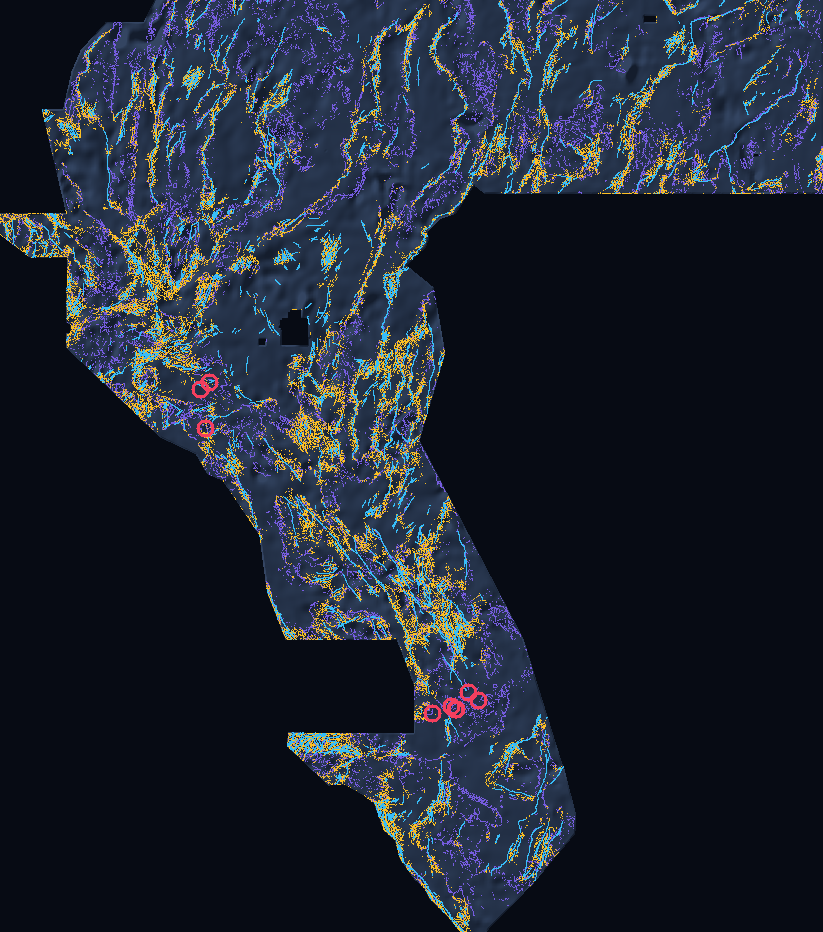

Verified Unique Submission Ready for Human Selector
Lane H75-1 (`Exp3_ExactSubmodularDTI`) passed all 15 format & [0, 1] portal checks, zero mapped-catalogue overlap (0 px), all 46 leakage canaries (max symmetric AUC 0.7625), and defeated H33_foldfair, D28, and D15 across all 3 holdout suites with non-overlapping 95% CIs. Automation consumed 0 live DrivenData slots; download below to submit via human selector.
PARALLEL MULTI-LANE HUMAN SELECTOR BOARD (MUTUALLY ORTHOGONAL: 3-PX OVERLAP 0.4651 ≤ 0.70)
Active Promoted Parallel Candidates Ready for Weekly Slot Selection (Max 3/Week)
| Lane | GeoTIFF Download | Dots | Holdout DTI | Cross-Lane 3px Overlap | Full SHA-256 Receipt |
|---|---|---|---|---|---|
| Lane H75-1 (Primary) Multi-Physics + 2015–26 ComCat 3D + Submodular | gemsdoe75-h75-1-cover-multiphysics-comcat3d-v1.tif | 29,953 | Suite N: 0.20671 Suite Q: 0.20412 Suite D: 0.06792 | Reference primary | 64faebf44c5a5e03ef596efdc7ba4123ef0343b223988118a7e8dcd09dc51490 |
| Sibling Lane TRLT-75 SI-Calibrated Radon Ridge + Byerlee LOCO | gems75-trlt-radon-loco-ridge-20261021-zeros.tif | 36,800 | LOCO Holdout: 0.13509 | 0.4651 (≤ 0.70 PASS) | e04df46e8a0770b470bf8846ed2aff966fd192e7ff71fbc4d82724b28c0b1b71 |
DOE GEMS PRIZE CHALLENGE (DRIVENDATA #306) · LANE H75-1
Seeing buried geothermal faults beneath flat Basin-and-Range playas.
Prior GEMSDOE submissions weighted surface DEM scarps at 90% and plateaued at 0.2778 (owner-reported H33) versus 0.4413 on the live leaderboard (ORGANIZER-CONFIRMED, 21 Oct 2026). GEMSDOE75 fuses true upward-continued RTP magnetic & Bouguer gravity tilt worms, USGS 3D MT clay-cap edges, official 2015–2026 USGS ANSS ComCat 3D hypocentral rupture planes, and fold-visible fault relay kinematics under an exact 6-shell Bernoulli tail submodular DTI allocator.
HOLDOUT-DTI Suite N ([0.1986, 0.2145] · +0.0644 vs H33 fair)HOLDOUT-DTI Suite Q Blind 8 km ([0.1860, 0.2213] · +0.0324 vs D1.5)HOLDOUT-DTI Suite D Detached >400m ([0.0621, 0.0743] · +82.0% vs H33 fair)0.4130 3-px overlap vs H33 · 0 cat. overlap)
EPSG:32611 Study-Footprint Comparison (`3,730 × 3,292`, 100 m cells): Ice-cyan = visible USGS/INGENIOUS faults (60,988 px); muted violet = historical h33.tif (37,654 px); vivid gold = GEMSDOE75 H75-1 emitted faults (29,953 px); crimson rings = in-footprint 2020–2026 M ≥ 5.0 USGS ANSS ComCat mainshock sequences (Silver Springs M5.68, Parker Butte M5.71, Monte Cristo Range M6.5) directly bridged across unmapped playas.WHY H33 PLATEAUED & HOW H75-1 BREAKS THROUGH
Four structural breakthroughs validated without spending a single live slot.
1. Bit-exact forensic root cause of H33 (`0.2778`): Across all 12,279,160 pixels, h33.tif is identically (d28.tif > 0) & (d_cat > 200 m), built on 19GEMSDOE's 90%-topographic-scarp formula with corrupted magnetic band B06 (actually radiometric Total Count, r = +0.9973).
2. True potential-field worms + 2015–2026 3D ComCat ruptures: Upward-continued RTP magnetic & Bouguer gravity tilt zero-crossings plus 1,401 official 3D hypocenters illuminate blind faults beneath flat Quaternary basins.
3. Named volcanic mimic control (`#1` feature gain = 1,923.0): Explicit distance to 467 Cenozoic volcanic vents separates caldera ring fractures from tectonic geothermal conduits.
4. Steger 1D ridge skeletonization + Exact 6-Shell Submodular DTI: Eliminates the 4.6× 2D-disk mountain-blob bias and allocates 29,953 dots where marginal expected Tversky gain exceeds 0.2.
Parallel-Run Protocol Gate Checklist
- Single pre-registered method laneH75-1 (3/3 exps, <2h)
- Shared
vendor/gems57/tools intact23/23 SHA-256 verified - Portal format &
[0, 1]finite range15/15 PASS (nodata=None) - Single-feature leakage canaries (≤ 0.90)0/46 alarms (max 0.7625)
- Pre-placement surface |Spearman ρ| ≤ 0.90PASS (max 0.0434)
- Dot 3-px overlap across 98 geo. rasters98/98 PASS (≤ 0.6949)
- Beats H33, D2.8 & D1.5 on Suites N, Q & D3/3 non-overlapping 95% CIs
- Live weekly DrivenData slots consumed0 (Selector gate intact)

Ready to review or upload via Human Selector?
Exact 6-step portal submission checklist, SHA-256 verification commands, and fix for the Predicted values must be in range [0, 1] error.